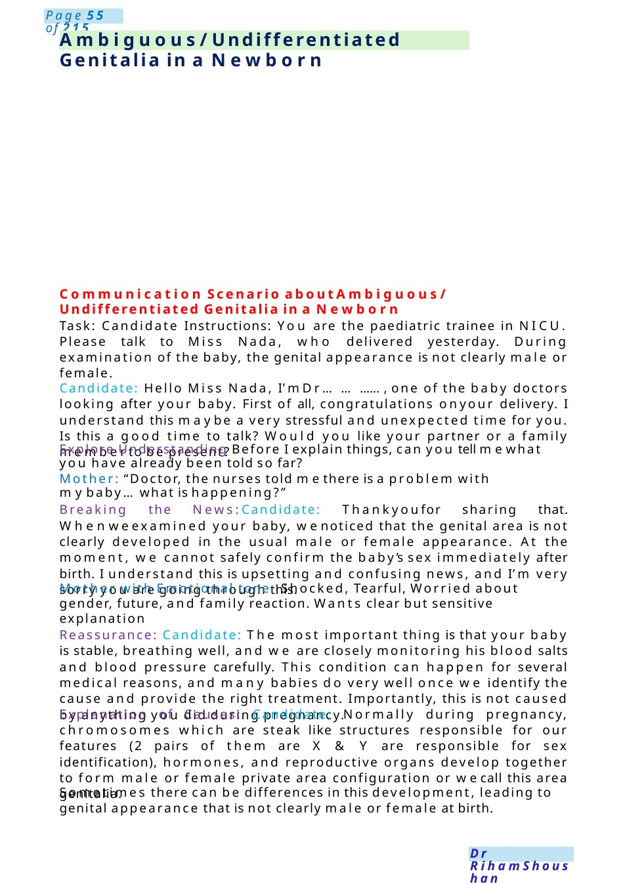
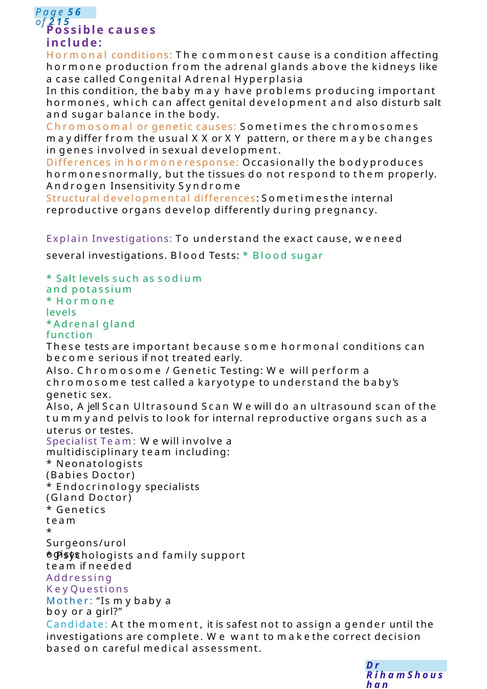
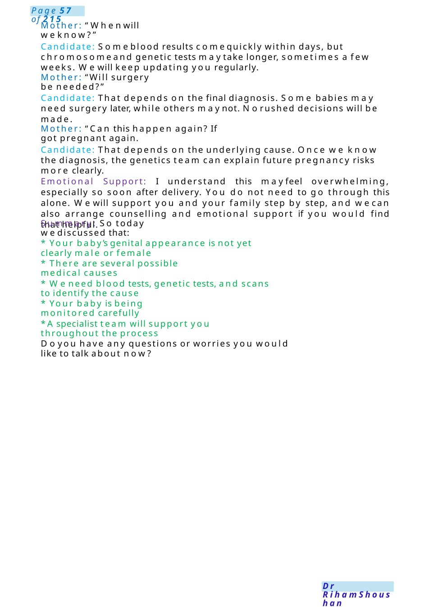
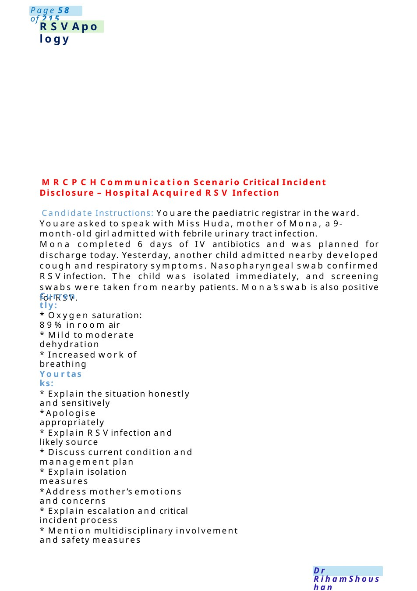

Ambiguous / Undifferentiated Genitalia in a Newborn
Communication Scenario about Ambiguous/ Undifferentiated Genitalia in a Newborn Task: Candidate Instructions: You are the paediatric trainee in NICU. Please talk to Miss Nada, who delivered yesterday. During examination of the baby, the genital appearance is not clearly male or female.
Scenario Summary
Communication Scenario about Ambiguous/ Undifferentiated Genitalia in a Newborn Task: Candidate Instructions: You are the paediatric trainee in NICU. Please talk to Miss Nada, who delivered yesterday. During examination of the baby, the genital appearance is not clearly male or female.
Full Original Scenario

Ambiguous/ Undifferentiated Genitalia in a Newborn
Communication Scenario about Ambiguous/ Undifferentiated Genitalia in a Newborn
Task: Candidate Instructions: You are the paediatric trainee in NICU. Please talk to Miss Nada, who delivered yesterday. During examination of the baby, the genital appearance is not clearly male or female.
Candidate: Hello Miss Nada, I’m Dr............,one of the baby doctors looking after your baby. First of all, congratulations onyour delivery. I understand this maybe a very stressful and unexpected time for you. Is this a good time to talk? Would you like your partner or a family memberto be present?
Explore Understanding Before I explain things, can you tell mewhat you have already been told so far?
Mother: “Doctor, the nurses told methere is a problem with mybaby...what is happening?”
Breaking the News:Candidate: Thankyoufor sharing that. Whenweexamined your baby, wenoticed that the genital area is not clearly developed in the usual male or female appearance. At the moment, we cannot safely confirm the baby’s sex immediately after birth. I understand this is upsetting and confusing news, and I’m very sorry you are going through this.
Mother with Emotional tone: Shocked, Tearful, Worried about gender, future, and family reaction. Wants clear but sensitive explanation
Reassurance: Candidate: The most important thing is that your baby is stable, breathing well, and we are closely monitoring his blood salts and blood pressure carefully. This condition can happen for several medical reasons, and many babies do very well once we identify the cause and provide the right treatment. Importantly, this is not caused by anything you did during pregnancy.
Explanation of Causes: Candidate: Normally during pregnancy, chromosomes which are steak like structures responsible for our features (2 pairs of them are X & Y are responsible for sex identification), hormones, and reproductive organs develop together to form male or female private area configuration or wecall this area genitalia.
Sometimes there can be differences in this development, leading to genital appearance that is not clearly male or female at birth.

Possible causes include:
Hormonal conditions: The commonest cause is a condition affecting hormone production from the adrenal glands above the kidneys like a case called Congenital Adrenal Hyperplasia
In this condition, the baby may have problems producing important hormones, which can affect genital development and also disturb salt and sugar balance in the body.
Chromosomal or genetic causes: Sometimes the chromosomes maydiffer from the usual XXor XY pattern, or there maybe changes in genes involved in sexual development.
Differences in hormoneresponse: Occasionally the bodyproduces hormonesnormally, but the tissues do not respond to them properly. Androgen Insensitivity Syndrome
Structural developmental differences: Sometimesthe internal reproductive organs develop differently during pregnancy.
Explain Investigations: To understand the exact cause, weneed several investigations. Blood Tests: * Blood sugar
- Salt levels such as sodium and potassium
- Hormone levels
- Adrenal gland function
These tests are important because some hormonal conditions can become serious if not treated early.
Also. Chromosome / Genetic Testing: We will perform a chromosome test called a karyotype to understand the baby’s genetic sex.
Also, Ajell Scan Ultrasound Scan Wewill do an ultrasound scan of the tummyand pelvis to look for internal reproductive organs such as a uterus or testes.
Specialist Team: Wewill involve a multidisciplinary team including:
- Neonatologists (Babies Doctor)
- Endocrinology specialists (Gland Doctor)
- Genetics team
- Surgeons/urologists
- Psychologists and family support team if needed
Addressing Key Questions
Mother: “Is mybaby a boy or a girl?”
Candidate: At the moment, it is safest not to assign a gender until the investigations are complete. We want to makethe correct decision based on careful medical assessment.

Mother: “Whenwill weknow?”
Candidate: Someblood results comequickly within days, but chromosomeand genetic tests maytake longer, sometimes a few weeks. Wewill keep updating you regularly.
Mother: “Will surgery be needed?”
Candidate: That depends on the final diagnosis. Some babies may need surgery later, while others maynot. Norushed decisions will be made.
Mother: “Can this happen again? If got pregnant again.
Candidate: That depends on the underlying cause. Once we know the diagnosis, the genetics team can explain future pregnancy risks more clearly.
Emotional Support: I understand this mayfeel overwhelming, especially so soon after delivery. You do not need to go through this alone. Wewill support you and your family step by step, and wecan also arrange counselling and emotional support if you would find that helpful.
Summary: So today wediscussed that:
- Your baby’s genital appearance is not yet clearly male or female
- There are several possible medical causes
- Weneed blood tests, genetic tests, and scans to identify the cause
- Your baby is being monitored carefully
- Aspecialist team will support you throughout the process
Doyou have any questions or worries you would like to talk about now?

RSVApology
MRCPCHCommunication Scenario Critical Incident Disclosure – Hospital Acquired RSV Infection
Candidate Instructions: Youare the paediatric registrar in the ward. Youare asked to speak with Miss Huda, mother of Mona, a 9-month-old girl admitted with febrile urinary tract infection.
Mona completed 6 days of IV antibiotics and was planned for discharge today. Yesterday, another child admitted nearby developed cough and respiratory symptoms. Nasopharyngeal swab confirmed RSVinfection. The child was isolated immediately, and screening swabs were taken from nearby patients. Mona’s swab is also positive for RSV.
Currently:
- Oxygen saturation: 89% in room air
- Mild to moderate dehydration
- Increased work of breathing
Yourtasks:
- Explain the situation honestly and sensitively
- Apologise appropriately
- Explain RSVinfection and likely source
- Discuss current condition and management plan
- Explain isolation measures
- Address mother’s emotions and concerns
- Explain escalation and critical incident process
- Mention multidisciplinary involvement and safety measures